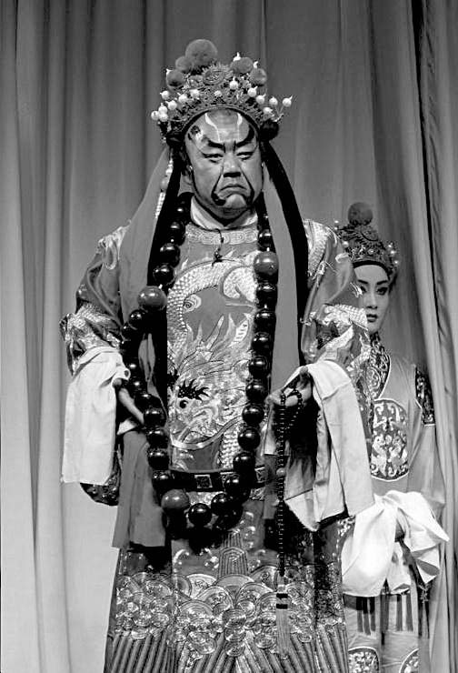

朱厚照出生后不久，便发生一桩在整个明代都数得着的惊天大案，时称“郑旺妖言案”。
案子主人公郑旺，是北京最底层社会的一员，住在京城东北角的郑村镇，家里世世代代当兵。
明朝制度：一入军籍，“世世不改”；“兵之子弟为余丁，既为出缺时充补，又为正兵及官调发时或勤操时执耕稼之事。”[18]郑旺正是这么一个“军余”，用今天话说，相当于预备役士兵。
这郑旺虽然讨了老婆，还生了一个女儿，可他实在太穷了，所以像这种人家通常有的情形一样，女儿养到十二岁就被卖到富贵人家，一来换点钱，二来也是给女儿找条活路。
最初是被卖到贵族焦礼的伯爵府，后听说又被转卖给一姓沈的通政[19]当婢女。这郑旺，自把女儿卖掉以后，就再未将她放在心上，直到有一年，约摸弘治十六年前后的时候，邻村发生的一桩事却忽然让他想起了已被卖掉多年的女儿——他听说附近驼子庄有户人家的女儿入了宫，众乡邻就说，这家人如今算是皇亲了。此事令郑旺忽发奇想，不知怎的觉得自己女儿也进了皇宫；倘若果真如此，他郑旺不也同样做了皇亲么？穷疯了的郑旺于是展开他的“皇宫寻女行动”；他有没有循序先到伯爵和通政府邸打听金莲下落，史无记载，我们所了解的是他径直奔皇宫而去，仿佛认准了人就在那儿。
谁都知道北京人长于结交，再没能耐的人保不准也认识几个场面上“说得上话”的朋友。显然，五百年前北京便已是这种情形，连郑旺这号人，居然也有两个锦衣卫“舍余”的铁哥儿们——所谓“舍余”，亦即锦衣卫人员的家属子弟——一个叫妥刚，一个叫妥洪，是兄弟俩。
由于锦衣卫是皇家鹰犬，跟内廷多有往来，所以郑旺就托妥氏兄弟走走太监的路子。妥氏兄弟果然替他联系上了乾清宫太监刘山[20]，过了一段时间，刘山传递消息，竟然说郑旺女儿找到了，确在宫中：“其女今名郑金莲，现在圣慈仁寿太皇太后周氏宫中，实东宫生母也。”[21]据说刘山不光说了这些话，同时还交给郑旺不少诸如衣物、布绢之类的东西，称系郑金莲对其父的赏赐。这郑旺本意恐怕也并非寻女，他没有提出见女儿的要求，而是拿了这些东西回去就四处显摆，张扬自己是“皇亲”。这下可不得了，郑村镇出了一个“郑皇亲”的消息不胫而走，轰动京城，远近攀附者蜂拥而至，抢着送礼、巴结。而另一个后果，则自然而然引起有关朱厚照并非皇后所出的议论，这种怀疑民间原本一直就有，现在因了郑旺事件便好像坐实了似的。
不久，“郑皇亲传奇”终于传到弘治帝耳中，龙颜大怒，当即开动专政机器，将郑旺、刘山一干人等下狱，定为“妖”案——转换成现代语，案件性质约摸相当于“现行反革命”。
该案疑点突出。皇家档案藏头露尾，稗史间则出入极大，故其真相无可明。据我推断，郑旺其人实不值一哂，无非是一个明代市井“碰瓷”者，就像今日胡同里专门制造事端、讹人钱财的无赖，穷极无聊而冒险，不计后果以求一逞。
但朱厚照身世之疑却不因郑旺的无稽而消融。
疑一：弘治十七年“妖言案”结案，《罪惟录》载，这年秋天，“奸人刘山伏诛。”[22]只杀了刘山，没有郑旺。据说弘治皇帝对此案有如下批示：“刘林（即刘山）使依律决了……郑旺且监着。”[23]“且监着”就是关在牢里，既不杀也不放。为什么？当时，有人就提出“若果妖言，旺乃罪魁，不即加刑”，从犯刘山反而被处死，个中情节“尤为可疑”[24]。弘治不欲郑旺死，此实可玩味。杀刘山，理由很充分；家奴逆主，何时何地皆当杀之，所以把刘山杀掉，总是不会错的。郑旺呢？可以杀，也可不杀；关键系于弘治未来打算怎样做。杀掉郑旺，就意味着封死了有关朱厚照生母的议论，让事情到此为止；不杀郑旺，弘治皇帝显然给自己留了后门——一扇通往为朱厚照生母正名的后门。不过，这扇后门弘治并未来得及用。他料不到，翌年，年仅三十六岁的自己竟会撒手西去。老天爷给他的时间不足以去打开这扇从现实到情感都颇为沉重的后门。弘治这番苦心，聪明人是不难体会的。他死后，朱厚照继位，照例大赦天下，主办“妖言案”的刑部尚书闵珪乘机便将郑旺释放，有人提出此等大案主犯之赦免是否当请示今上，闵珪则打马虎眼，说凡大赦令没有明确列出不准释放者，可以不请示（“诏书不载者，即宜释放”）。闵珪的处置很聪明；一来他明显对先帝当初的心迹深有颖悟，二来如今先帝已逝，把郑旺杀掉吧，有违先帝本意，继续关下去则既无了断的可能，也许还徒增今上烦恼，所以只能放，不声不响地放！然而，那郑旺却是一块“泼皮牛二”式滚刀肉，捡了条命非但不叫声“惭愧”，反倒再次搅事。可能他也不傻，也从弘治的蹊跷处置上猜出朱厚照非皇后所亲生的传言绝非空穴来风，因此“舍得一身剐，敢把皇帝拉下马”。穷到他那份儿上，赌就赌了，赌赢闹个国丈当当，赌输就“砍头不过碗大的疤”。正德二年十月，他除了再次散布自己女儿是皇上生母的说法，还冲击紫禁城，道是前来上访，面奏皇上“国母见幽之状”——自然被拿下，二度投入刑部大狱。这次他就没那么幸运了，已是正德皇帝的朱厚照二话不说，结果了他的小命。正德杀郑旺跟弘治不杀郑旺一样有道理。首先，正德刚接班做皇帝，稳定压倒一切；其次，新帝践祚，正要借重太后，用沈德符的说法：“时孝康（张后谥号）与武宗母子恩深，岂有更改之理？”[25]这郑旺不是瞎捣乱吗？再次，子不言父过，弘治倘若亲自正本清源是一回事，由朱厚照来翻这个案子就是另一回事，就是往先帝脸上抹黑，就是不孝。再再次，这有关朱厚照的出身、血统，他不是明朝开国以来唯一的“皇嫡长子”么，如果生母从张后换成别人，就不仅失去这身份，且势必沦为毫无名分的“宫人之子”。所以这个郑旺弘治虽不曾杀，但落到正德手里，后者一定要对他说：“你死定了，而且会死得很难看。”
疑二：《治世余闻》记述，编修王瓒当时奉命在大内司礼监教书，一日教完书出来，经过左顺门时看见有人被严实地裹在“红毡衫”（厚毛所织大氅之类）里，由两名太监押出。不见其面，但从露出的两只小脚可辨出此系一妇人。有人尾随而去，见妇人被送往浣衣局（明朝发落宫人之处，“凡宫人年老及罢退废者，发此局居住”）[26]，浣衣局官员一见此女来到，“俱起立迎入，待之异常”，似乎她身份非同一般。王瓒事后对几个同僚描述了上述情景，结果没几天，就传来“郑旺妖言案”开审的消息。这宫女是谁？跟朱厚照生母传闻有何关系？被如此诡秘地送往浣衣局的宫女，有记载说名叫“黄女儿”，也有记载说名叫“王女儿”，可能因口口相传之故，黄王音近，所以记有不同。总之不姓郑。是否可以假设，郑旺所谓太子系其女郑金莲所生固然是胡说八道，但太子非张后所生、其生母另有其人却是一个真实而被掩盖起来的秘密？总之，明代作者普遍认为这个裹得严严实实悄悄送往浣衣局的宫女，与几天后开审的“妖言案”之间，一定是有干系的。
这谜团，单在旁人心头挥之不去便罢，设若朱厚照自己心头也是如此，事情就严重了。这正是这桩表面看来只是“皇家花边故事”值得细说之处。正德一生，荒唐至极，性情举止乖戾不常，每令人匪夷所思。史家论此，多以君道衡之，加以批判。这固然是对的，然在我眼里，正德除去脑袋上戴着顶皇冠，也是一个由生到死、长着嘴来吃饭长着鼻孔来出气的人；他的一生不要说做皇帝完全做砸了，单讲做人也做得极其失败，我们看得很分明，这个人内心有很多变态的地方，从人格上看基本不能算一个正常人。因此，比他为君失道更根本的，是他为人是否病态的问题。
幸福的家庭总是相似的，不幸的家庭各有各的不幸。当意识到我们是在讨论一个病人而非一个皇帝，那么，他的成长史，他的隐私，他的内心秘密，就是一些最重要的方面。同时，普通用来衡量人是否幸福的那些参照物，对他也完全适用。比如说，由父母身份的疑问而造成人自我肯定上的障碍以及对其社会角色确认的困难，这在私生子身上普遍表现很强烈，如果正德对真正的生母存有疑问，他实际上就处于一种相似的心理状态。比如说，亲生母亲不明或者曾经明了却突然间失去这指归，一般会置人于对世界的冷漠，令他们性格发生玩世甚至反社会的倾向。又比如说，缺乏母爱或自感没有母爱，有时让一个人的成年过程缩短，少年老成世故；有时刚好相反，变得特别漫长而艰难。在正德身上，体现出的是后者，神经质、自控性差、责任感缺失、沉溺于游戏意识、行为幼稚而不自知。还有一点，一个心理严重受挫的人，其行事往往会以某种偏执方式寻求自我补偿，愈是郁郁寡欢愈追求无度的欢愉，愈是脆弱怯懦愈急于营造及表现一种刚强勇敢的表象，如此等等，一俟条件具备，此等心理能量便会如汪洋溃堤般轰然涌出，一发不可收——在继位当了皇帝的正德身上，这很典型。
有趣的是，正德生在明代宫廷史上一个看上去最幸福的家庭里。为什么这么说呢？因为至少在公开的意义上，他父亲弘治皇帝生活中没有其他女人，“上平生别无幸与，后张氏相得甚欢。”[27]这在古来动辄三宫六院、三千宠爱的皇帝中间，近乎奇闻。好几次，臣子们做出忧国状，以传宗接代为由，上书要求弘治选妃，弘治居然概不领情。弘治元年，一个太监就跪求皇帝，“选女子于宫中”“以待上服阙”。二年七月，有礼科右给事韩鼎者呈上奏章，搬出典故说，古代天子一娶就是十二个女人，“以广储嗣”，这可是国家大事啊，皇上您千万别耽误了自己！三年，又有人出言相劝，敦请弘治“博选良家女”，这回是宗室荆王。四年，人们仍然喋喋不休，一个叫丁谳的无足轻重的家伙（吏部听选监生）恳切上疏，热盼皇上选妃设嫔……年年如此，活现了“皇帝不急太监急”那句话。大抵，他们清楚这拍的是最万无一失的马屁，好色之心人皆有之，更不必说皇帝了——历史上有几个皇帝是不好色的呢？然而这回情形偏偏例外，弘治不为所动，每年有人为此动本，他总是温旨推辞。古人也讲“从一而终”，那是给女人讲的。一个男人，而且是有法定权利拥有众多女人的皇帝，居然做到了从一而终，难怪有人要惊呼：“上自青宫[28]婚后，未几登大位。无论鱼贯承恩，即寻常三宫亦不曾备，以至于上仙。真千古所无之事！”[29]其他当皇帝的，所御女子有鱼贯而入之势，弘治倒好，一直到死为止连最起码的三宫也不搞，可以风流而坚决不风流，让任何男人看，确乎是千古所无之事。这究竟怎么一回事？照今人的观念，想必弘治特别特别爱张后，否则绝难至此。所以，有位弘治传记作者就说：“他俩的爱情很专一，与民间夫妻相似。”[30]提到了“爱情”这样的高度，且评为“专一”——再说下去，不会引出一个举案齐眉式的佳话吧？问题是，如果弘治夫妇果真两情融洽、恩爱无比，如此幸福家庭，却造就出朱厚照那样一个有畸态人格的后代，儿童心理学的原理岂不只能改写？
其实，对史料加以分析，我们却发现弘治与张后“相得甚欢”的背后有着诸多难言之隐，或者说，弘治的“专一”乃是一种无奈的现实。
问题出在弘治自己身上。
我们应该不会忘记，前面述及弘治父亲成化皇帝时，出现过的那个超级妒妇万贵妃。这女人为了补偿自己的失子之痛，一跃而为成化骨血的连环杀手，而弘治则是第一个从其手中奇迹般逃生的婴儿。
明孝宗朱祐樘。
朱厚照之父，明代诸帝中性格比较温和的一位，据说他只爱皇后这一个女人，但不知为何，有关皇太子的生母却传出那么大的流言。

京剧《法门寺》刘瑾造型。
京剧中太监人物， 一般以丑角充之。在《法门寺》中，刘瑾却以花脸应工，实际上，太监的喉咙是发不出那般雄壮的声音的。同样，头上也不可能顶着王冠。这都是合理的夸张。因为刘瑾虽非王爵，却人称“九千岁”，阉人的嗓音无从表现他的权势。
弘治生母姓纪，普通宫女。成化在宫中偶然遇见，宠幸了一把，于是怀上弘治。万贵妃耳目甚众，消息自然首先传到她耳内。好几年了，凡有这种事情，万氏总是一视同仁的。她随即派某婢前去下药，或者弘治命大，或者中药不像西药十拿九稳，结果药到根未除，而那位婢女终于也觉不忍，就没有将实情回禀万氏，只说纪氏本人病得一塌糊涂快要死了，万氏轻信未疑。等到弘治生下来，消息再次传到万氏那里，万氏大怒，改派太监张敏去把婴儿淹死。弘治再次命大，张敏寻思：“上未有子，奈何弃之？”也背叛万氏，密为安排，将弘治母子隐匿在宫中某不为人知处所，暗中给予食物，令其母子得以活命。这故事发生在成化六年，张敏的保密工作做得相当不错，上下一直被瞒着，直到成化十一年某日，张敏为成化梳头时，成化对镜叹曰：“老之将至而无子！”听到这话，张敏突然伏地奏道：“死罪，万岁已有子也！”成化目瞪口呆，忙问子在何处。张敏再奏道：这事说出来奴才就死定了，只是恳请皇上千万为皇子做主！
下面的情节，《明史》写来甚是凄惨：
帝大喜，即日幸西内，遣使往迎皇子。使至，妃抱皇子泣曰：“儿去，吾不得生。儿见黄袍有须者，即儿父也。”衣以小绯袍，乘小舆，拥至阶下，发披地，走投帝怀。帝置之膝，抚视久之，悲喜泣下曰：“我子也，类我。”
“发披地”，是因弘治出生以来，为防泄露行迹头发都不敢剪，那样子完全是个小野人，如今长到六岁，终见天日，并且随即被立为皇太子。据说万贵妃闻知成化父子相见的消息后，“日夜怨泣”。皇太子她总算不敢加害了，纪氏和太监张敏则难逃厄运；当年六月，纪氏突然“暴薨”，张敏出于恐惧也吞金自尽，一场真实的“狸猫换太子”式宫庭传奇以此收场。
说起来，弘治真够可怜的，经历着如此可怕的童年。在母亲腹中，即因万氏下药致其生下以后头顶有寸许处根本不生毛发；本已先天不足，以后又藏匿暗室，苟且偷生，营养严重不足。身体孱弱可想而知，而担惊受怕投在心理上的阴影，更非可以消除者。虽赖张敏保全住了性命并终见天日，恐惧却未随之远去；数月以后，生母不明不白地死去，明明忠心耿耿、立有大功的张敏也畏而自尽，说明环境依旧险恶。母亲死后，弘治被祖母周太后置其宫中所养，幸如此才得保全，但余悸实际上一直缠绕着他。一次，万贵妃召弘治去，说请他吃饭；临行，老太后特意叮嘱：“儿去，无食。”到了那里，万氏先赐饭，弘治答道：“已饱。”再送上汤羹，弘治不知如何回绝，竟把真话说出来了：“疑有毒。”一个不过几岁的小孩子，心里面始终装着被人下毒的疑惧，该是怎样阴暗的体验！
这使他在肉体和性格两方面都成为一个非常柔弱的人。
这柔弱，加上不幸的童年，意外地带来一个不太坏的皇帝。政治上，弘治是明代诸帝中作恶较少的一位。由于身体不行，此人欲望不强，甚至偏于寡淡，他在女人和性的问题上表现比较超脱或曰“高尚”，实由此来。他父亲成化皇帝时代，有个大臣叫万安，以进房中术和拍万贵妃马屁，爬到了大学士高位上。弘治登基，万安相信以房中术邀宠必当屡试不爽，于是照样给弘治来了这么一手，将他多年对房中术的心得写成奏疏，封在小盒子密呈弘治，弘治见后即命太监怀恩拿着小盒子到内阁办公处，当众斥问万安：“这像一个大臣做的事吗？”搞得万安无地自容[31]。这故事历来都被当成弘治锐意澄清吏治的例子，不过，倘允许我们以“小人之心”另做揣度，恐怕万安也搞错了对象。综合各种史料来看，弘治实在没法儿热衷于实践什么房中术；以他的身子骨，不要说搞女人，寿命的维持已很吃力，最终只活了区区三十六岁。
至于其与张后的关系，似应从两方面来看。首先不必排除起初他在感情上对张氏确实比较依赖，盖因自幼遭际太苦，六岁甫离苦海又遽丧生母，忠仆自尽，过几年老祖母也弃之而去，凡是他以为爱着他的人，皆不在人世，当是时也，足可想见弘治与张氏成婚意味着什么。极度的孤独令他一度视张氏为最大慰藉，而不济的身体客观上又使他对广纳嫔妃毫无兴趣，事情无非如此。
其次就是他懦弱的性格在起作用了。弘治与张后感情究竟怎样？我研究的结论，是早先不错，后来很差。因为张氏实在不是一个可爱的女子，即便不提正德身世这桩悬案里面的种种纠葛，单看张氏的为人，弘治也不可能从她那里感觉到多么幸福。张氏两个亲弟弟鹤龄和延龄，在她的纵容下无恶不作，是明史外戚里数一数二的流氓；他们的母亲金夫人也是丑类，利用女儿的地位，吃贿吞赂。张家兄弟素日里欺压良善的不法之事就不提了，单看他们在宫中所为便可知他们嚣张到何等地步。某年大约是元宵节吧，二张入宫与弘治、张后等共饮观灯，中间弘治起身如厕，将皇冠除下交给一旁伺候的内侍；弘治刚走，二张便上前把皇冠夺过来，当众顶在自己脑袋上，以为戏耍，简直是狗胆包天。据说那个张延龄甚至曾经借酒奸污过宫女。[32]诸如此类根本属于太岁头上动土、羞辱和挑战帝权的行径，二张都做得出来，没有张后的纵容是无法想象的，由此亦可窥出张后对老公实在很不尊重，民间夫妻尚知彼此维护，而张后对弘治却只有蔑视。弘治虽弱，却不傻，以上情节他事后均有所闻，他难道不觉得奇辱？难道不知二张所为症结是在张后的纵容？难道看不出自己在张后内心占据着何等可怜的地位？
所以在与张氏的生活之中，弘治非但不可能“相得甚欢”，至少是憋着一肚子气。这股鸟气搁在别的皇帝身上，早就发作了，但弘治性情太弱，从小习惯逆来顺受。他采取的办法是很没有阳刚之气的，有几件事的处理可见一斑。
一次，张后突然提出做珍珠袍，并指名让弘治差太监王礼去广东采办珍珠。弘治大约早有经验，一听就知有猫腻。他审得实在，果然是王礼用几千两银子贿赂张母金夫人讨这差事，借机到地方上大捞一把。弘治先让人到内府找来足够的珍珠应付了张后，然后背地里把王礼叫来痛责一顿：“这遭且将就罢，今后再敢来说，必剥皮示众！”[33]
再一次，张家兄弟麾其家奴在外侵夺民田，之后又操纵司法，受害者有冤难伸。事情传到弘治耳中，他派太监萧敬调查后得知事情属实，依律办了张氏家奴。萧敬回宫复命时，正赶上帝后二人用膳。张氏当即柳眉倒竖，骂萧敬道：外庭那些官员跟我们为难也就罢了，你这狗奴也学他们的样儿！张氏一骂，弘治居然也跟着把萧敬臭骂一通；过了一会儿，张后离去，弘治忙把萧敬叫到近旁，道歉说：“适所言，非我本意。”还拿出白金五十两赏赐萧敬，说什么：刚才自己与皇后偶然拌了几句嘴，所以迁怒于你，你不要当真，这些钱是给你压惊的。（“偶与后有怒，言特戏耳。恐尔等惊怖，以此压惊。”[34]）
又一次，在皇家别墅，也是家族内部的聚会，弘治、张后、太子朱厚照、金夫人以及张家兄弟聚饮。这时，二张在外面已经闹得极其不像话，屡屡引起朝臣弹劾。酒及半，张后、金夫人与朱厚照入内更衣，趁这工夫，弘治装作出外游赏，招呼二张同行，走得稍远，弘治把张鹤龄单独叫到一边，不知说了什么，“左右莫得闻，遥见鹤龄免冠首触地，自是稍敛迹。”[35]应该是讲了一些很重的话。
以上几件事过程中，弘治如出一辙，表达真实看法，全部偷偷摸摸背着张后，亏他还是皇帝，连男人都不像！但这也怪不得他，偃潜偷生的童年记忆令他生来就以弱者自居，凡事隐忍、隐忍、再隐忍，窝囊惯了。我们所要明白的只是，在他与张氏表面上相安无事的背后，埋伏着激烈的内心冲突，这冲突关系到利益、权力直至个人尊严，最终，自然关系到彼此感情。故而所谓的他们“相得甚欢”，要么是假象，要么只是某一阶段的特定情形。总体上来说，这个1487年至1505年之间中国的第一家庭绝不是幸福的。
此类情景，太子朱厚照岂能不看在眼里？外人为假象所蔽，朱厚照当不至于——毕竟那都是眼皮子底下发生的事。懦弱的父亲和霸道而又冷漠的母亲，会给一个孩子心灵带来什么？他将凭此理解人生，深宫高墙之内，人与人之间本已只有奴役、欺压、争夺和倾轧，岂料双亲之间竟也少爱寡恩。尤其身为母亲的张后，没有予人一丝温柔感觉，处事从不见其宅心的半点爱意，心胸狭隘，唯知利己，周身充满了市井气（她出身于一个小文人家庭，看看她那母亲金夫人和两个兄弟，就可知道这家人鄙俗之至）。不论朱厚照生母悬案真相如何，张后既然在公开场合充当着母亲角色，她至少应该有模有样地履行这身份。但是，我们在史书中找不到哪怕是很简单的一笔她关爱朱厚照的描述，倒是有不少她如何偏向、庇护其娘家人的细节，这虽然也是中国民间根深蒂固的一种伦理意识，却仍然给人这样的印象：张氏对于成为弘治妻子，潜意识里有一种吃亏的感受，她是在用胳膊肘向娘家拐的方式对弘治实行报复，或为自己寻找某种补偿。那么，究竟什么地方令她感到这样吃亏,而必欲借别的方面狠狠往回捞呢？对一个女人来说，尤其以弘治的特定情况论，很可能就是性生活太不如意!自然，这纯系猜测，聊备一解。无论如何，这个家庭没有唤起张后的柔情蜜意。我们在史料中看到弘治与太子间尚不乏天伦之乐，朝罢之后，他会陪朱厚照玩耍，有时甚至领着儿子干一点稍微出格的事情，比如夜晚在宫中潜游[36]；然而，未有迹象表明这种富于情趣的举动亦曾发生在张后与朱厚照之间，不仅如此，朱厚照与张后明显只是徒具母子名分，他后来决绝地搬离皇宫、住进豹房的行为，显示了他对象征着他的家庭和成长之地的极端厌恶。而最值得深思的是，多年后他独自死在豹房，情景凄凉；从病重不起到咽下最后一口气，史家没有让我们看到作为母后的张氏守在儿子的身旁。
我们不了解朱厚照何时得知自己生母另有其人这种说法；是从郑旺在正德二年第二次发难时知道的，还是之前即曾耳闻？不论何时知道，也不论朱厚照何种程度上相信这种说法，他内心就此所受到的冲击应该都是剧烈的。一直目睹着父母貌合神离的状态，又突然发现自己身世置于扑朔迷离的疑团之中，加上对自己真实生母悲惨遭际的挥之不去的种种幻想，这一定会令他对世界产生相当的厌恶感，对周边貌似衣冠楚楚的正人君子们形成本能的不信任甚至排斥情绪。这一切反应，搁在任何人身上均为必然，正德虽为皇帝，亦同样不会被放过。当人们以后震惊于明代居然有这么一位千奇百怪的变态皇帝时，不要忘记他首先从最本质的人的意义上，经受了情感和心理的非人折磨——也就是说，不要忘记正德其人的病理学基础。